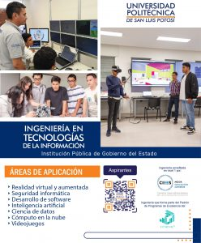

Ingeniería en Tecnologías de la Información (ITI)

Nivel:
Licenciatura
Título otorgado:
Ingeniería en Tecnologías de la Información
Duración:
9 Semestres
Descripción carrera:
El Ingeniero en Tecnologías de la Información aplica sus sólidos conocimientos al diseño, desarrollo e instrumentación de soluciones informáticas que requieren las organizaciones, atendiendo las necesidades humanas derivadas de la interacción con la computadora. Es competente para mantener equipos de cómputo operando eficientemente y ofrece al usuario soluciones integrales a los problemas asociados con el área computacional. Los Objetivos del Plan de Estudios de la Ingeniería en Tecnologías de la Información que ofrece la Universidad Politécnica de San Luis Potosí enfatizan siete aspectos importantes en la formación del Ingeniero, que le confieren una sólida preparación para desempeñarse exitosamente en el mundo laboral:
- Adquisición y empleo adecuado de los conocimientos de las Matemáticas y las Ciencias Básicas, como fundamentos para un ejercicio amplio de la profesión;
- Manejo diestro de los conocimientos de las tecnologías;
- Uso y desarrollo de la tecnología de la información para la innovación;
- Aplicación de métodos de investigación para identificar problemas y desarrollar soluciones de manera independiente;
- Formación integral con uso adecuado del idioma español, el dominio del idioma inglés, el desarrollo del pensamiento lógico y de habilidades para el autoestudio;
- Formación flexible apoyado en un Sistema de Tutorías para el uso eficiente del tiempo y la recuperación del conocimiento adquirido a través de otros medios;
- La adquisición de bases teóricas para continuar con estudios de postgrado.
Al finalizar los alumnos de Ingeniería en Tecnologías de la Información deben realizar una residencia profesional de 480 horas, donde ponen en práctica lo que se aprendió en las aulas; aunque en muchas de las materias de Ingeniería en Tecnologías de la Información se deben realizar proyectos finales de aplicación en la industria y la investigación que permitan un acercamiento vivencial temprano en su carrera. Se tiene también la actividad del capítulo estudiantil de la ACM (Association for Computing Machinery), que tiene como finalidad el fomentar la ética profesional en los alumnos, contribuir al desarrollo de las capacidades de los estudiantes mediante los diferentes concursos de programación promovidos por ACM, y mejorar la calidad de la educación en la institución mediante la realización y participación en los diferentes talleres, conferencias y congresos organizados por ACM. Los alumnos de Ingeniería en Tecnologías de la Información pueden ser miembros del club de robótica en el cual los estudiantes podrán aplicar sus conocimientos de matemáticas, física, programación de computadoras, habilidades como análisis, lógica y capacidad de abstracción para elaborar rutinas sofisticadas que generen movimientos en los robots LEGO.
Plan de estudios

Infraestructura / Recursos
Edificio del Centro de Nuevas Tecnologías
- Laboratorio de Redes (CCNA-Cisco)
- Laboratorio de Telecomunicaciones
- Laboratorio de Tecnologías SUN
- Centro de Software Libre
- Laboratorio de Cableado Estructurado
- Laboratorio de Arquitectura de Computadoras
- Laboratorios especializados: Ingeniería de Software, Seguridad Informática, Comercio, Electrónico, Procesamiento Digital
- Software: Maple, Matlab, Interactive Physics, IBM Rational Rose, Oracle, Cisco Packet Tracer, Microsoft Campus Agreement, Software para el aprendizaje del Inglés, Solaris, Java, entre otros.
Certificaciones:
- Oracle Certified Associate, MySQL 5
- Oracle Certified Professional, MySQL 5.6 Developer
- Oracle Certified Associate, Java SE 5/SE 6
- Oracle Certified Professional, Java SE 6 Programmer
- Oracle Certified Associate, Java SE 7 Programmer
- Oracle Certified Associate, Oracle Solaris 10 Operating System
- Oracle Certified Professional, Oracle Solaris 10 System Administrator
- Oracle Certified Associate, Oracle Solaris 11 System Administrator
- Cisco Certified Entry Networking Technician (CCENT)
- Cisco Certified Network Associate (CCNA)
- Microsoft Technology Associate: Database Fundamentals
- Microsoft Office Specialist: Microsoft Office Word 2013
- Microsoft Office Specialist: Microsoft Office PowerPoint 2013
- Microsoft Office Specialist: Microsoft Office Excel 2013
Logros / Distinciones:
- Mejor Academia a nivel Latinoamérica que promueve la certificación, el programa Cisco Networking Academy Program y que forma nuevos estudiantes en el área de TI
- 3 medallas a estudiantes ejemplares otorgadas por la asociación Trayectoria de Éxito.
- 1er, 6º, 5º lugar concurso Netriders México, 2009, 2011 y 2013.
- 1er lugar expo ciencias otorgada por la Red Nacional de Actividades Juveniles en Ciencia y Tecnología, 2012 y 2013.
- 5º y 6º lugar en el Torneo Mexicano de Robótica, 2016.
- 150+ Certificaciones CCNA y CCENT como Academia CCNA
- 480+ Certificaciones JAVA y Solaris como Academia Oracle.
- Proyecto Azios: Leyendas Potosinas (2018-2019):Estudiantes del noveno semestre de los Programas Educativos de Ingeniería en Tecnologías de la Información (ITI), Ingeniería en Telemática (ITEM) y Licenciatura en Mercadotecnia Internacional (LMI), de la Universidad Politécnica de San Luis Potosí (UPSLP), y liderados por el profesor Víctor Manuel Fernández Mireles, desarrollaron un videojuego utilizando realidad virtual en el que se adaptan algunas leyendas potosinas. En la implementación del videojuego se adaptó la leyenda “La bruja huachichil del Barrio de Tlaxcala”. En este videojuego, se rescatan algunas leyendas potosinas y elementos históricos del viejo San Luis de forma innovadora utilizando realidad virtual. Este trabajo se presentó en el Concurso Nacional de Videojuegos MX en la categoría “Universitarios” en la cual se recibieron 264 proyectos de los cuales ocho obtuvieron algún reconocimiento. El videojuego presentado por la Universidad recibió el premio al “Mejor Juego Cultural-Educativo».
- Proyecto XTOR (2015-2019): Estudiantes del PE liderados por el profesor Rafael Llamas Contreras a través del grupo de trabajo de Cyberseguridad y en colaboración con la Secretaría de Seguridad Pública del Estado de San Luis Potosí, desarrollaron una aplicación llamada XTOR. Esta aplicación bloquea las llamadas entrantes al celular si es que coincide con algún número que fue reportado como un número del que se han hecho llamadas para extorsionar. La base de datos en la que se consultan los números reportados se actualiza de manera regular por la Secretaría de Seguridad Pública del Estado de San Luis Potosí. Esta aplicación se desarrolló para el sistema operativo Android y actualmente se encuentra disponible de forma gratuita desde “Play Store”.
- Proyecto GIGI (2017) : Como parte de las actividades de divulgación de la ciencia en la institución, estudiantes del PE crearon un robot utilizando diversos objetos de uso cotidiano. Dada la temática de la Semana de la Ciencia en la que se participó, el robot reproducía frases orientadas al cuidado del agua. Este robot fue bautizado bajo el nombre de GIGI y se presentó en la Semana de la Ciencia. El objetivo fue mostrar a los niños lo que pueden ser capaces de hacer en carreras del área de las ingenierías, así mismo, como se puede contribuir a mantener la naturaleza. Este robot en su primera versión fue programado para compartir frases simples y después a través de reconocimiento enseñar a los niños.
- Club de Robótica : El Club de Robótica esta conformado por alumnos que tienen el gusto por la programación y la robótica. Ya han sido varias las generaciones que han participado en este club, dedicando horas extras e independientes a sus materias y laboratorios para la construcción de sus robots y para participar en la competencia de cierre. Los miembros de este club pertenecen principalmente a estudiantes de los primeros semestres, quienes son lidereados por compañeros estudiantes de semestres más avanzados. Este tipo de actividades fortalece las habilidades de compañerismo, competencia, investigación, autoaprendizaje, pero sobre todo el saber que aún se tiene un gran camino por recorrer como estudiantes del PE de ITI, y sobre todo se preparan para competencias más avanzadas, como el Torneo Mexicano de Robótica, quienes participan en este torneo son los mejores de cada una de las competencias de cierre y participan cada año.
- Proyecto ADA : Como una iniciativa gubernamental, la Institución, en conjunto con la Academia y estudiantes y egresadas mujeres de la carrera de ITI, buscan fortalecer el gusto por las profesiones en ingeniería a estudiantes que actualmente se encuentran en formación en las secundarias del estado, participan con la impartición de pláticas y talleres de manera gratuita fortaleciendo el futuro de las profesiones en el país.
- Proyecto Semana de la Ciencia: PEPA PIG (2017): Juego de Realidad Virtual y Realidad Aumentada, creado con la intención de divulgar la ciencia motivando a los estudiantes visitantes dentro del rango de edades de 5 a 10 años a buscar el cuidado del agua. Este juego fué desarrollado por estudiantes del programa Educativo de ITI.
- 2013, Reconocimiento por haber concluido al menos 12 años en el programa Cisco Networking Academy Program. Única Universidad a nivel nacional que mantiene los roles de Centro Docente, Centro de Soporte y Centro de Entrenamiento para la región centro de México; única Universidad a nivel Latinoamérica participando en el programa Girls Power Tech, Acceleration Program dentro del programa Cisco Networking Academy Program.
Perfil de egreso
El Ingeniero en Tecnologías de la Información tiene los conocimientos necesarios de software y hardware en interacción con el factor humano, para ofrecer una solución integral a los problemas asociados con el área computacional.
Campo de trabajo
Un Ingeniero en Tecnologías de la Información tiene la posibilidad de desarrollarse en industrias dedicadas tanto a la transformación como a los servicios, siempre buscando la mejora. Por lo anterior puede contratarse en:
Empresas de diversos sectores productivos como:
- Tv Azteca D.F Ajusco
- Tyssenkrupp mexinox create it
- Swarm Insights
- Seiton Gestión de Documentos SA de CV
- Infosys Triara Mexichem
- Aromáticos la victoria
- Internacional de Sistemas de Imagen, León Gto.
- Swarm Insights
- Estratel TECH ENERGY & GROUNDING MX S.A. DE C.V.
- CFE
- Universidad Autónoma de San Luis Potosí
- Draexlmaier Automotive
- SMARTbt SA DE CV
- Servicios de Salud de San Luis Potosí
- ABB
- Softtek
- CONALEP
- CISTEL
- SEGE
En puestos como:
- Soporte Técnico
- Desarrollador de Programa de Software
- Administrador de Bases de Datos
- Administrador de Proyectos TI
- Mantenimiento y Operación de Redes
- Gerencia o Administración de Sistemas
- Administrador de Servidores
- Webmaster o Diseño Web
- Telecomunicaciones y Sistemas Móviles
En áreas relativas a:
- Industria Manufacturera
- Automotriz
- Electrodomésticos
- Agroindustria
- Alimentos y Bebidas